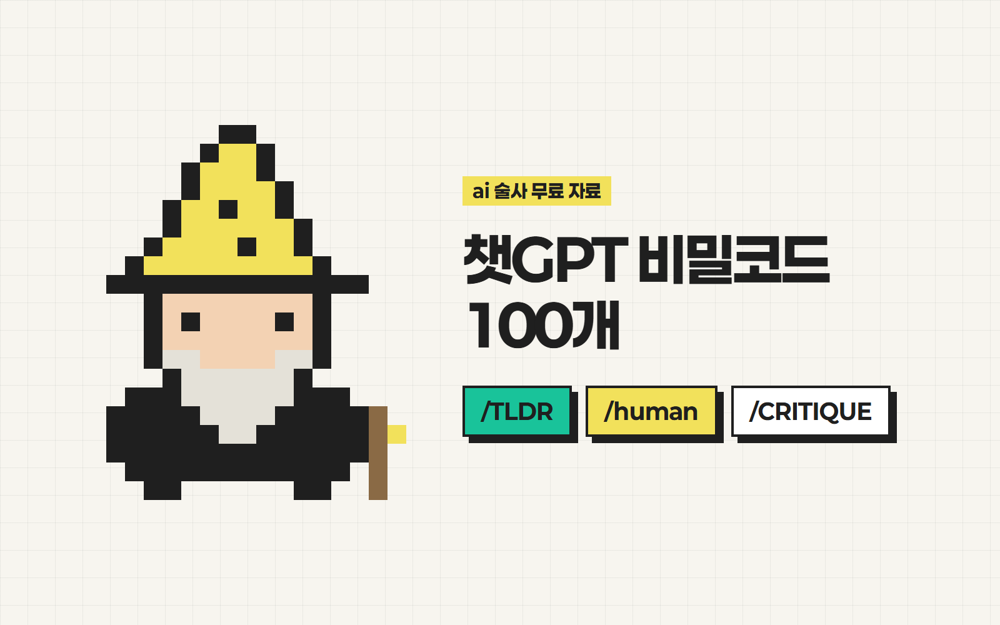

안녕하세요 ai 술사 성준입니다.
코드 하나만 붙이면
챗GPT 답이 달라집니다
릴스에서 소개한 비밀코드 100개를 상황별로 정리했어요.
카드를 누르면 바로 복사돼요.
사용법은 딱 3가지
코드는 GPT에 원래 있는 명령어가 아니라, 내가 정해 쓰는 단축키예요.
방법 1질문 끝에 붙이기
등록 없이 바로 돼요. 가장 쉬워요.
- 1아래 카드를 눌러 복사해요.
- 2내 질문 끝에 붙여넣고 보내요.
방법 2대화 첫머리에 한 번 등록
그 대화 안에서는 코드만 써도 알아들어요.
앞으로 내가 /TLDR 이라고 쓰면 "위 글의 핵심만 3줄로 요약해줘"라는 뜻이야.
맞춤형 지침에 저장
모든 대화에서 쓰고 싶을 때요.
- 1자주 쓰는 5~10개만 골라요.
- 2ChatGPT 설정 「맞춤형 지침」에 방법 2처럼 적어요.
글자 수 제한 때문에 100개를 다 넣을 순 없어요.
코드는 이어 붙여도 돼요. /CRITIQUE로 약점 찾고 → /human으로 말투 다듬기.
비밀코드 100개
글 다듬기
쓴 글의 약점을 찾고, 말투와 길이를 바로잡는 코드예요.
요약·정리
긴 글과 복잡한 내용을 한눈에 보이게 바꿔주는 코드예요.
생각 정리·질문
뻔한 답 대신 나한테 맞는 답을 끌어내는 코드예요.
업무·보고
보고서, 회의, 일정 관리를 빠르게 끝내는 코드예요.
기획·아이디어
아이디어를 많이 내고, 그중 쓸만한 것을 골라내는 코드예요.
마케팅·카피
팔리는 문구와 SNS 콘텐츠를 만드는 코드예요.
이메일·메시지
쓰기 애매한 메일과 메시지를 대신 써주는 코드예요.
공부·학습
처음 보는 내용도 빠르게 익히게 해주는 코드예요.
데이터·엑셀
수식과 데이터 정리를 대신 해주는 코드예요. 파일을 올리거나 표를 붙여넣고 쓰세요.
검증·품질
GPT의 그럴듯한 헛소리를 걸러내는 코드예요. 중요한 답에는 꼭 하나씩 붙이세요.
코드 써보시고 AI 활용 레벨을 올려보세요!
2026년 10월 기준이에요. 프롬프트의 [대괄호] 부분은 내 상황에 맞게 바꿔 쓰세요.
궁금하신 점은 DM으로 편하게 물어봐 주세요 🪄
From. ai 술사 | 성준
ai술사의 모든 꿀팁 확인하기!